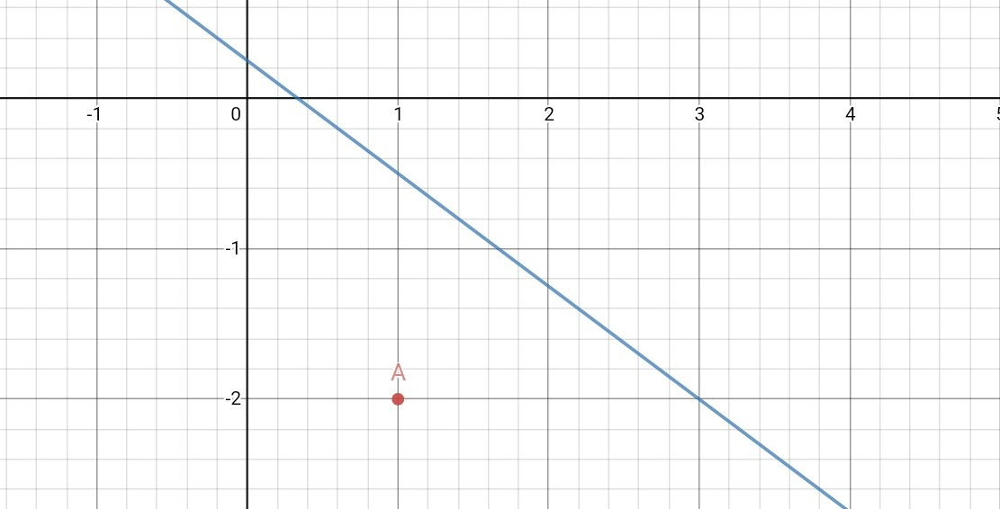
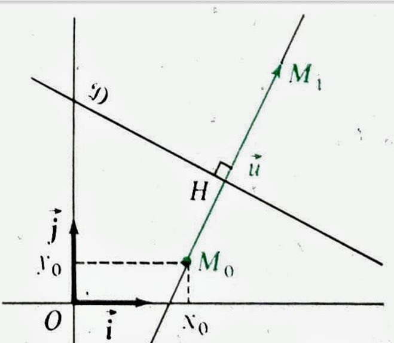

On dit un vecteur est unitaire lorsque le norme de ce vecteur est égal à \(1\). On dit deux vecteurs sont orthogonaux lorsque l’angle formé par les deux vecteurs est \(π\over 2\). Dans le figure ci-dessous, les vecteurs u⃗ et v⃗ sont unitaires et orthogonaux.

Définition 1
On dit qu’un repère (O, i⃗ , j⃗ ) est \(orthonormal\) lorsque les vecteurs u⃗ et v⃗ sont unitaires et orthogonaux :
\(||\) u⃗ \(||\) \(=\) \(||\) v⃗ \(||\) et u⃗ · v⃗ \( = 0\)
Preuve : u⃗ · v⃗ \(=\) \(||\) u⃗ \(||\) \(*\) \(||\) v⃗ \(||\) \(*\) \(cos(θ)\)
Comme, repère (O, i⃗ , j⃗ ) est orthonormal, \( θ = \) \(π\over 2\) \(⇒ cos(θ) = 0\)
\(⇒\) u⃗ · v⃗ \(=\) \(||\) u⃗ \(||\) \(*\) \(||\) v⃗ \(||\) \(*\) \(cos(θ)\) \(= 1 * 1 * 0 = 0 \) \(⇒\) u⃗ · v⃗ \(= 0\)
Théorème 1
Le produit scalaire de deux vecteurs u⃗ et u⃗\('\) de coordonnées \((x; y)\) et \((x'; y')\) dans un repère orthonormal est donné par :
u⃗ · u⃗\('\) \( = xx' + yy'\)
Preuve : Soit deux vecteurs u⃗ et u⃗\('\) de coordonnées \((x; y)\) et \((x'; y')\) dans un repère orthonormal (O, i⃗, j⃗).
u⃗ · u⃗\('\) \( = (x\)i⃗ \(+\) \(y\)j⃗\() * (x'\)i⃗ \(+\) \(y\)'j⃗) \( = xx'\)( i⃗ )\(^2\) \(+ (xy' + yx')\)(i⃗ * j⃗) \(+ yy'\)( j⃗ )\(^2\).
Comme (O, i⃗ , j⃗) est un repère orthonormal, i⃗ \(·\) j⃗ \(= 0\). Comme les vecteurs i⃗ et j⃗ sont unitaires, || i⃗ || = || j⃗ || = 1 \(⇒\) ( i⃗ )\(^2 = \) ( j⃗ )\(^2 = 1\)
u⃗ · u⃗\('\) \( = xx'\)( i⃗ )\(^2\) \(+ (xy' + yx')\)(i⃗ * j⃗) \(+ yy'\)( j⃗ )\(^2\) = \(xx' * (1) + (xy' + yx')*(0) + (yy')*(1)\)
\(⇒\) u⃗ · u⃗\('\) \( = xx' + yy'\)
En tout particulier, pour tout vecteur u⃗ de coordonnées \((x, y)\) dans un repère orthonormal (O, i⃗ , j⃗) on a :
u⃗ · i⃗ \(= x\) et u⃗ · j⃗ \(= y\)
Preuve :
u⃗ · i⃗ \(= (x\)i⃗ \(+\) \(y\)j⃗) · i⃗ \(= x(\) i⃗ \()^2\) \(+ y\) (i⃗ · j⃗) \(= x*1 + y*0 = x\)
Car i⃗ · j⃗ \(= 0\) et ( i⃗ ) \(^2 = 1\) comme (O, i⃗ , j⃗) est un repère orthonormal.
Corollaires
Le plan \(𝓟\) est muni d’un repère orthonormal.
1) Deux vecteurs et non nuls, de coordonnées respectives \((x; y)\) et \((x'; y')\), sont orthogonaux si et seulement si, u⃗ · u⃗\('\) \(= 0\); par suite :
u⃗ \(⟂\) u⃗\('\) si, et seulement si, \(xx' + yy' = 0\)
En particulier, pour tout vecteur u⃗\((a; b)\), le vecteur u⃗\('\)\((-b; a)\) est orthogonal à u⃗ ; en effet :
u⃗ · u⃗\('\) \( = a × (-b) + b × a = 0\)
2) Le carré scalaire et la norme d’un vecteur u⃗ de coordonnées \((x; y)\) sont donnés par :
( u⃗ )\(^2 = x^2 + y^2\); || u⃗ || = \(\sqrt{x^2 + y^2}\)
3) Rappelons l’expression du produit scalaire de deux vecteurs non nuls u⃗, u⃗\('\), d’angle \(θ\) rad :
u⃗ · u⃗\(' =\) || u⃗ || × || u⃗\('\) || × \(cos(θ)\)
Lorsque les vecteurs u⃗, u⃗\('\) sont définis par leurs coordonnées \((x; y)\) et \((x'; y')\) dans un repère orthonormal, on peut calculer || u⃗ ||, || u⃗\('\) ||, u⃗ · u⃗\('\), et en déduire :
\(cos(θ) = \) \(xx' + yy'\over \sqrt{x^2 + y^2} + \sqrt{x'^2 + y'^2}\)
Il est alors possible de déterminer \(θ\), en calculant \(arccos\) ou \(cos^{-1}\) du résultat obtenu au-dessus.
Preuve :
u⃗ · u⃗\('\) \(= \) || u⃗ || × || u⃗\('\) || × \(cos(θ)\)
\(⇒ cos(θ) = \) \((\)u⃗ · u⃗\('\)\()/(\)|| u⃗ || × || u⃗\('\) ||\()\) \(= \) \(xx' + yy'\over \sqrt{x^2 + y^2} + \sqrt{x'^2 + y'^2}\)
Exemple :
Pour u⃗ \((-3; 4)\) et u⃗\(' (2; -1)\), on a :
|| u⃗ || = \(\sqrt{x^2 +y^2}\) \(= \sqrt{(-3)^2 + 4^2} = 5\)
|| u⃗\('\) || = \(\sqrt{x^2 +y^2}\) \(= \sqrt{(2)^2 + (-1)^2} = \sqrt{5}\)
u⃗ · u⃗\('\) \(= xx' + yy' = (-3) × 2 + 4 × (-1) = -10\); d'où:
\(cos(θ) = \) \(xx' + yy'\over \sqrt{x^2 + y^2} + \sqrt{x'^2 + y'^2} = \) \(-10\over 5\sqrt{5}\) \( ≈ -0.8944\); par suite :
\(θ = cos^{-1}(-0.8944) = 2.6779\) rad \(≈ 153.43°\)
Exemple
Soit deux points \(A\) et \(B\) de coordonnées respectives \((2; -3)\) et \((-1; -2)\) dans un repère orthonormal.
Le vecteur \(\overrightarrow{AB}\) pour coordonnées \((-1-2, -2 -(-3))\) \(=\) \((-3, 1)\), et pour norme :
|| \(\overrightarrow{AB}\) || \(=\) \(\sqrt{(-3)^2 + 1^2}\). La distance des points \(A\) et \(B\) est donc: \(AB\) = || \(\overrightarrow{AB}\) || \(= 10\)
Cas général
Soit deux points \(M\)\(0\)\((x\)\(0\) , \(y\)\(0\)\()\) et \(M\)\(1\)\((x\)\(1\) , \(y\)\(1\)\()\); le vecteur \(M\)0\(M\)\(1\) a pour coordonnées \((x\)\(1\)\(-x\)\(0\), \(y\)\(1\)\(-y\)\(0\)\()\). On a donc :
\(M\)0\(M\)\(1\) \(=\) || \(\overrightarrow{M_0M_1}\) || \(=\) \(\sqrt{(x_1 - x_0)^2 + (y_1 - y_0)^2}\)
Théorème 2
La distance de deux points \(M_0\) et \(M_1\) de coordonnées respectives \((x_0 ; y_0)\) et \((x_1 ; y_1)\) dans un repère orthonormal est donnée par :
\(M_0M_1 = \) \(\sqrt{(x_1 - x_0)^2 + (y_1 - y_0)^2}\)
En particulier, la distance de l’origine \(O\) du repère au point \(M(x; y\)) est :
\(OM = \) \(\sqrt{x^2 + y^2}\)
Exercice résolu
Le plan étant rapporté à un repère orthonormal, on donne les points \(A(3; 2)\) et \(B(-1; 1)\). Déterminer, par méthode analytique, l’ensemble des points \(M\), tel que :
a) \(\overrightarrow{AB} · \overrightarrow{AM} = -6\) b) \(MA = MB\) c) \(MA^2 - MB^2 = 11\)
Designons par \((x; y)\) les coordonnées d’un point \(M\) du plan.
a) Les coordonnées du vecteur \(\overrightarrow{AB}\) sont \((-4. -1)\), celles du vecteur \(\overrightarrow{AM}\) sont \((x-3; y-2)\) et : \(\overrightarrow{AB} · \overrightarrow{AM} = -4(x-3) - (y-2) = -4x -y + 14\)
La condition \(\overrightarrow{AB} · \overrightarrow{AM} = -6\) s’exprime donc aussi sous la forme \(-4x - y +14 = -6\), soit \(4x + y -20 = 0\). Il en résulte que l’ensemble des points \(M\), tels que \(\overrightarrow{AB} · \overrightarrow{AM} = -6\) est la droite d'équation \(4x + y - 20 = 0\)
b) La condition \(MA = MB\) est équivalente à \(MA^2 = MB^2\), soit :
\((3-x)^2 + (2-y)^2 = (-1 - x)^2 + (1-y)^2\), soit encore \(8x + 2y - 11 = 0\)
Il en résulte que l’ensemble des points \(M\), tels que \(MA = MB\) est la droite d'équation \(8x + 2 y - 11 = 0.\)
c) La condition \(MA^2 - MB^2 = 11\) s’exprime aussi sous la forme :
\((3-x)^2+(2-y)^2-(-1-x)^2-(1-y)^2 = 11\) soit \(8x + 2y = 0.\)
Il en résulte que l’ensemble des points \(M\), tels que \(MA^2-MB^2 = 11\) est la droite d'équation \(4x+y=0\).
Vecteur Normal
On appelle vecteur normal d’une droite \(ⅅ\) du plan, tout vecteur non nul dont la direction est orthogonale à celle de \(ⅅ\).
Une droite possède une infinité de vecteurs normaux.
Soit une droite \(ⅅ\), un point \(M_0\)de \(ⅅ\) et un vecteur normal \(\vec{u}\) de \(ⅅ\).
Pour tout point \(M\) de la droite \(ⅅ\), les vecteurs \(\overrightarrow{M_0M}\) et \(\vec{u}\) sont orthogonaux; donc :
\(\overrightarrow{M_0M} · \vec{u} = 0\)
Réciproquement, pour tout point M du plan tel que \(\overrightarrow{M_0M} · \vec{u} = 0\), les vecteurs \(\overrightarrow{M_0M}\) et \(\vec{u}\) sont orthogonaux et \(M∈ⅅ\).
Théorème 3
Étant donnés un point \(M_0\) et un vecteur normal d’une droite \(ⅅ\), \(ⅅ\) est l’ensemble des points \(M\) du plan tels que \(\overrightarrow{M_0M} · \vec{u} = 0\).
Une droite \(ⅅ\) est donc déterminé par un point et un vecteur normal.
Équation d'une droite définie par un point et un vecteur normal
Le plan \(𝓟\) est rapporté à un repère orthonormal \((O,\vec{i},\vec{j})\).
Soit \(ⅅ\) la droite passant par \(M_0(-1; 2)\) et de vecteur normal \(\vec{u}(2; -3)\) .
Pour qu'un point \(M(x; y)\) du plan appartienne à \(ⅅ\), il faut et il suffit que \(\overrightarrow{M_0M} · \vec{u} = 0\); cette condition peut s'exprimer, à partir des coordonnées \((2; -3)\) de \(\vec{u}\) et \((x + 1; y-2)\) de \(\overrightarrow{M_0M}\) sous la forme :
\(2(x+1)-3(y-2) =0\).
Soit \(2x - 3y +8 = 0\). Cette relation, vérifiée par les coordonnées \((x; y)\) d'un point \(M\) du plan si, et seulement si, ce point appartient à \(ⅅ\), est une équation cartésienne de la droite \(ⅅ\).
Théorème 4
Soit une droite ⅅ passant par \(M_0(x_0; y_0)\) et de vecteur normal \(\vec{u}(a; b)\). La condition \(\overrightarrow{M_0M} · \vec{u} = 0\) s'exprime sous la forme :
\(a(x-x_0)+b(y -y_0)=0\)
A partir de l'équation cartésienne \(ax +by+c=0\) d'une droite ⅅ dans un repère orthonormal, on peut obtenir les coordonnées d'un vecteur normal de ⅅ.
Le vecteur \(\vec{v}(-b; a)\) est un vecteur directeur de ⅅ. Considérons le vecteur \(\vec{u}(a; b)\) : il n'est pas nul, car un au moins des deux réels \(a, b\) n'est pas nul, et est orthogonal à \(\vec{v}\), car \(\vec{u} · \vec{v} = a(-b)+ba = 0\). Le vecteur \(\vec{u}\) est donc un vecteur normal de ⅅ.
Théorème 5
Étant donné une droite ⅅ d'équation cartésienne \(ax + by + c = 0\) dans un repère orthonormal :
1. un vecteur directeur de ⅅ est \(\vec{v}(-b; a)\);
2. un vecteur normal de ⅅ est \(\vec{u}(a; b)\).
Condition d'orthogonalité de deux droites
Soit ⅅ et ⅅ’ deux droites, d'équations respectives dans un repère orthonormal :
\(ax + by + c = 0\) et \(a'x + b'y + c' = 0\)
Les vecteurs \(\vec{v}(-b; a)\) et \(\vec{v'}(-b; a)\) sont des vecteurs directeurs respectifs de ⅅ et ⅅ’/
Pour que les droites ⅅ et ⅅ’ soient perpendiculaires, il faut et il suffit que les vecteurs \(\vec{v}\) et \(\vec{v'}\) soient orthogonaux, c’est-a-dire que :
\(\vec{v} · \vec{v'}=(-b)(-b' )+aa' = aa' +bb' = 0\)
Théorème 6
Pour que deux droites, d'équations \(ax + by +c = 0\) et \(a'x + b'y + c' = 0\)
dans un repère orthonormal soient perpendiculaires, il faut et il suffit que \(aa' + bb' = 0\)
Pour deux droites d'équation \(y = mx + h\) et \(y = m'x + h'\), la condition d'orthogonalité s'écrit: \(mm' + 1 = 0\)
Exemple :
Les droites d'équations \(y = 3x - 2\) et \(y = \)\(-1\over3\)\(x +5\) sont perpendiculaires, car \(3 × \)\(-1\over 3\) \(+1=0\)
Le plan 𝓟 est rapporté à un repère orthonormal \((O,\vec{i},\vec{j})\)
Activité 1
Soit le point \(A(1; -2)\) et la droite ⅅ d'équation \(3x+4y-1=0\)
Soit la droite ⅅ' passant par Aet perpendiculaire à ⅅ.
L'équation de la droite ⅅ'est \(-4(x-1)+3(y+2)=0\) ⇒ \(-4x + 3y +10 = 0\) d'après théorème 4.
Soit \(H\) l’intersection des droites ⅅ et ⅅ’.
Déterminons les coordonnées de \(H\) en calculons le système d'équation :
\(3x=4y-1=0\)
\(-4x+3y+10=0\)
⇒ \(H(\)\(43\over 25\);\(-26\over 25\)\()\)
Calculons la distance des points \(A\) et \(H\)
\(AH = \sqrt{(x_H-x_A)^2 + (y_H-y_A)^2}\) = \(\sqrt{(\frac{43}{25}- 1)^2 + (-\frac{26}{25} + 2)^2} = \frac{6}{5}\)
On rappelle que la distance des points \(A\) et \(h\) est, par définition, la distance du point \(A\) a la droite ⅅ; on la note \(d(A, ⅅ)\).
Activité 2
Cette activité propose une autre méthode de calcul de \(d(A, ⅅ)\).
Soit un vecteur \(\vec{u}\) normal à la droite ⅅ. \(\vec{u}(3; 4)\) ||\(\vec{u}\)|| \(= \sqrt{3^2+4^2} = 5\)
A partir du repère \((A,\vec{u})\) de la droite ⅅ', donnons une représentation paramétrique analytique de cette droite.
\(A(1; -2)\) \(\vec{u}(3; 4)\)
\(x_{D'} = x_A + αt = 1 + 3t\)
\(y_{D'} = y_A + βt = -2 + 4t\)
Soit \(t_H\) le paramètre du point \(H\).
\(x_{D'} = 1 + 3t_H\)
\(y_{D'} = -2 + 4t_H\)
Calculons \(t_H\) en exprimant que le point \(H\) appartient à la droite \(ⅅ\).
\(x_H=1+3t_H\) et \(y_H= -2 + 4t_H\)
⇒ \(3x_H+4y_H-1=0\)
\(3(1+3t_H) +4(-2+4t_H) -1=0\)
\(3+9t_H-8+16t_H-1=0\)
\(25t_H = 6\)
⇒ \(t_H=\frac{6}{25}\)
Calculons la distance des points \(A\) et \(H\)
On rappelle que \(t_H\) est le réel tel que \(\overrightarrow{AH} = t_H\vec{u}\)
\(\overrightarrow{AH} = || \frac{6}{25} \vec{u} || = || \frac{6}{25} × 5 || = \frac{6}{5}\)
Etude du cas général
On considère une droite ⅅ d'équation \(ax + by + c = 0\) et un point \(M_0(x_0; y_0)\) n’appartenant pas à ⅅ. On propose de calculer la distance \(d(M0,d)\), c’est-à-dire la distance \(M_0H\) du point \(M_0\) a son projeté orthogonal \(H\) sur ⅅ.

Soit \(\vec{u}\) un vecteur normal à ⅅ, donc \(\vec{u}(a;b)\). Soit \(M_1\) le point tel que \(\overrightarrow{M_0M_1} = \vec{u}\).
⇒ \(M_0M_1 = || \vec{u} || = \sqrt{a^2+b^2}\)
On note \(x_H\) et \(y_H\) les coordonnées du point \(H\).
\(\overrightarrow{M_0M_1} · \overrightarrow{M_0M_H} = (a;b) · (x_H - x_0, y_H - y_0) = ax_H - ax_0 + by_H - by_0\)
Comme \(H∈ⅅ\) ⇒ \(ax_H +by_H + c = 0\) ⇒ \(c = -ax_H -by_H\) ⇒ \(-c = ax_H+by_H\)
\(\overrightarrow{M_0M_1} · \overrightarrow{M_0M_H} = ax_H - ax_0 + by_H - by_0 = -ax_0 -by_0 + (ax_H+by_H) = -ax_0-by_0-c = -(ax_0+by_0+c)\)
En utilisant la relation: \(\overrightarrow{M_0M_1} · \overrightarrow{M_0M_H} = M_0M_1 × M_0H × cos(M_1M_0H)\)
\(cos(M_1M_0H) = cos(0) = 1\)
\(\overrightarrow{M_0M_1} · \overrightarrow{M_0M_H} = M_0M_1 × M_0H\)
\(M_0H = \frac{\overrightarrow{M_0M_1} · \overrightarrow{M_0M_H}}{M_0M_1} = \frac{-(ax_0 + by_0 + c)}{\sqrt{a^2 + b^2}}\) comme le distance est toujours positive :
\(M_0H = \frac{|ax_0 + by_0 + c|}{\sqrt{a^2 + b^2}}\)
Théorème 7
Dans un repère orthonormal, la distance du point \(M_0(x_0 ; y_0)\) a la droite ⅅ , d'équation \(ax + by + c = 0\), est donnée par :
\(d(M_0,ⅅ ) = \frac{|ax_0 + by_0 + c|}{\sqrt{a^2 + b^2}}\)
Exemple
Calculons la distance entre le point \(A(1;-2)\) et la droite ⅅ d'équation \(3x+4y-1 = 0\)
\(d(M_0,ⅅ ) = \frac{|ax_0 + by_0 + c|}{\sqrt{a^2 + b^2}} = \frac{|3 × 1 + 4 × (-2) - 1|}{\sqrt{3^2 + 4^2}} = \frac{6}{5}\)
Cas Général
Soit le cercle \(C\) de centre \(Ω(x_0; y_0)\) et de rayon \(r\)

La condition \(ΩM^2=r^2\) est nécessaire et suffisante pour qu’un point \(M\) du plan 𝓟 appartient à \(C : (x; y)\) étant les coordonnées du point \(M\), cette condition s'exprime sous la forme: \((x - x_0)^2 + (y - y_0)^2=r^2\)
Cette relation, vérifiée par les coordonnées \((x; y)\) d’un point \(M\) du plan si, et seulement si, ce point appartient au cercle \(C\), est un équation cartésiennes, ou plus simplement, une équation du cercle \(C\)
Theoreme 8
Dans un repère orthonormal, une équation du cercle de centre \(Ω(x_0; y_0)\) et de rayon \(r\) est: \((x - x_0)^2 + (y - y_0)^2=r^2\)
Exemple:
Une équation du cercle de centre \(Ω(1; -2)\) et de rayon \(5\) est:
\((x-1)^2+(y + 2)^2 = (\sqrt{5})^2\)
\(x^2+y^2-2x+4y = 0\)
Notons que ce cercle pass par l'origine \(O\) du repère. En effet, les coordonnées \((0, 0)\) du point \(O\) vérifient l'équation trouvée.
Ensemble d'équation \(x^2 + y^2+ αx + βx +λ=0\)
L'équation \((x-x_0)^2 + (y-y_0)^2 = r^2\) d’un cercle \(C(Ω,r)\) dans un repère orthonormal, peut s'écrire :
\(x^2 + y^2 - 2x_0x - 2y_0y + x_0^2 + y_0^2 - r^2 = 0\)
C’est une relation de la forme \(x^2 + y^2+ αx + βx +λ=0\) dans laquelle α, β, λ sont des réels donnés. Inversement, une telle relation étant donnée, on peut se demander si l’ensemble des points \(M\) du plan, dont les coordonnées \((x,y)\) dans un repère orthonormal vérifient la relation précédente, est un cercle.
Exemples:
Soit la relation: \(x^2 + y^2 - 2x + 3y - \frac{3}{4} = 0\) (1)
On a: \(x^2-2x = (x-1)^2-1\) et \(y^2 + 3y = (y + \frac{3}{2})^2 - \frac{9}{4}\)
La relation (1) peut donc s'écrire :
\((x-1)^2 + (y + \frac{3}{2})^2 - 1 - \frac{9}{4} - \frac{3}{4}= 0\), ou \((x-1)^2 + (y + \frac{3}{2})^2 = 4\)
On reconnaît l'équation du cercle de centre \(Ω_1(1; -32)\) et de rayon \(2\) : l'ensemble des points est \(C(1, 2)\).
Cas général:
En écrivant la relation \(=x^2 + y^2+ αx + βx +λ=0\), sous la forme
\((x + \frac{α}{2})^2 + (y + \frac{β}{2})^2 = h\)
où \(h =\frac{α^2}{2} = \frac{β^2}{2} - λ\) on obtient les résultats suivants:
1. si \(h>0\), l’ensemble des points est le cercle de centre \(Ω(\frac{-α}{2}; \frac{β}{2})\) et de rayon \(\sqrt{h}\)
2. si \(h = 0\), l’ensemble des points est le cercle point \(Ω(\frac{-α}{2}; \frac{β}{2})\)
3. si \(h < 0\), l’ensemble des points est vide.
Theorem 9
L’ensemble des points \(M\) du plan, dont les coordonnées \((x, y)\), dans un repère orthonormal vérifient une relation de la forme :
\(x^2 + y^2+ αx + βx +λ=0\)
est soit un cercle, éventuellement réduit à un point, soit l’ensemble vide.
Exercice résolu
On donne. dans un repère orthonormal les points \(A(3; 2)\) et \(B(1; -1)\)
Déterminer analytiquement l'ensemble Cdes points \(M\) du plan tels que \(MA^2-MB^2=11\)
Pour tout point \(M\) du plan 𝓟, de coordonnées \((x; y)\) on a :
\(MA^2 = (x-3)^2+(y-2)^2\)
\(MB^2 = (x-1)^2+(y+1)^2\)
d'où \(MA^2+MB^2=2x^2+2y^2-8x-2y+15\)
La condition \(MA^2+MB^2=11\) peut donc s’exprimer sous la forme :
\(2x^2+2y^2-8x-2y+15 = 11\)
soit: \(x^2+y^2-4x-y+2=0\) (1)
La relation (1) est une équation de l’ensemble \(C\): elle s'écrit aussi :
\((x-2)^2+(y-\frac{1}{2})^2=(\frac{3}{2})^2\)
Il en résulte que l’ensemble \(C\) est le cercle de centre \(Ω(2, 12)\) et de rayon \(\frac{3}{2}\)
Il est immédiat de constater qu le centre \(Ω\) du cercle \(C\) est le milieu du segment \([A,B]\)